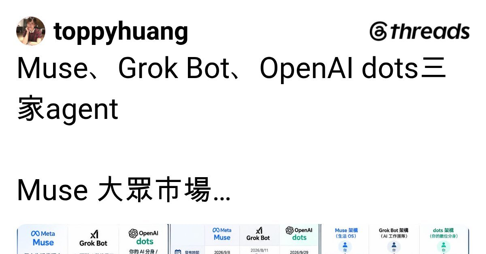
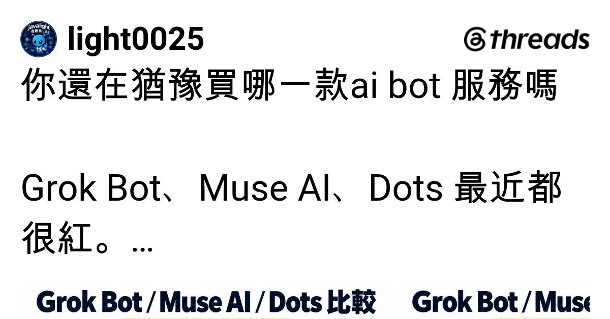
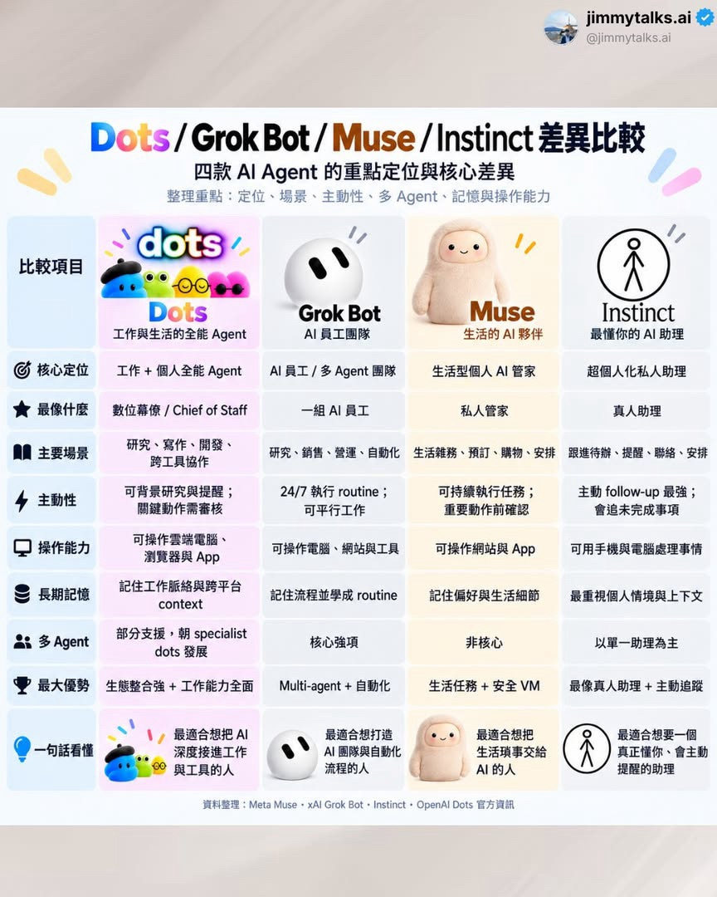
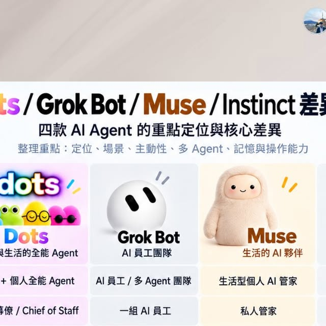
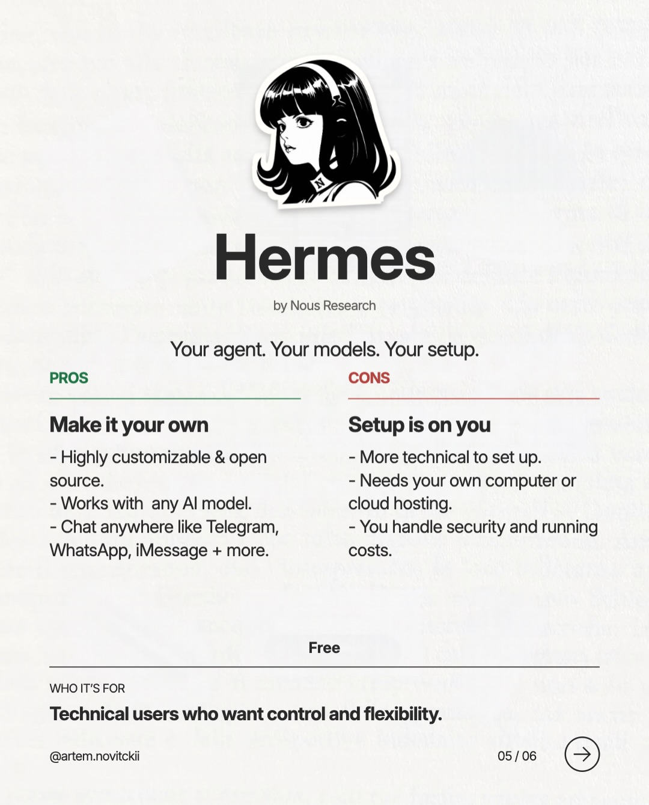
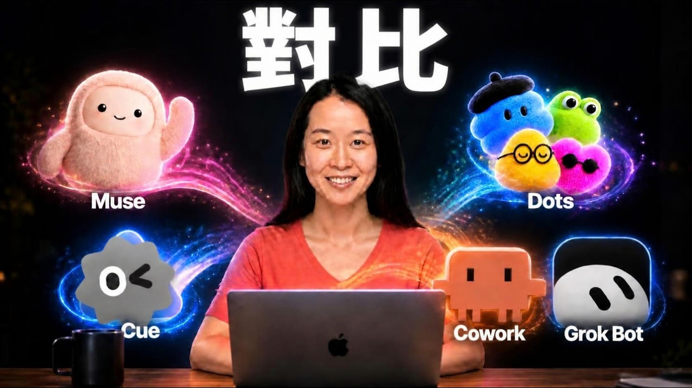

Threads｜Muse、Grok Bots 與「OpenAI dots」：Agent 比較貼文的可驗證邊界

一句話摘要
這篇貼文抓到 Agent 競爭將從「誰回答得更好」走向「誰能在受控環境中完成更多任務」；不過三家能力、名稱與整合清單的可驗證程度差異很大。使用前應先拆開看產品是否已正式發表、在哪個地區與帳號可用、哪些權限要交出去。
Threads 貼文的比較框架
作者將三者定位為：
- Muse：以 Meta 的大眾分發與免費入口為優勢，可處理購物、訂位、Email 與行程等日常任務；貼文同時提到其可能涉及 VM 中 Email、檔案資料的安全風險。
- Grok Bot：被描述為可由 Sales、Research、Engineering 等多個 Bot 分工、協作與排程的 AI workforce，偏向專業使用者。
- 「OpenAI dots」：被描述為結合「GPT-6 Astra」、Cloud Computer、4,000+ Apps、長期記憶與主動研究，並串接 ChatGPT、Codex、Work、Slack、Teams 的方案。
最後作者以熱門餐廳訂位為例，期待 Muse 未來在台灣可協助搶訂餐廳，也提出一個很實際的問題：若所有人都使用同類代理，稀缺名額是否只會變成更快被搶完？
補充來源：把差異比喻成三種角色
另一則由 `light0025` 發布的 Threads 貼文也把 Grok Bot、Muse AI、Dots 放在同一組比較，將選擇題概括為「雲端工作機」、「商務助理」或「ChatGPT 常駐 Agent」。該貼文的封面與公開文字沒有提供可檢視的詳細定價、完整功能表、來源文件或官方連結，因此本文將其保存為市場定位的敘事，而非產品規格證據。

這種角色化比喻有助於先釐清需求，但也最容易掩蓋實際的帳號資格、資料權限、運作環境、地區供應與價格條件。下列查核與試用原則同樣適用。
2026-10-07 補充：四款 Agent 定位圖新增 Instinct

使用者提供的圖表將比較延伸為四種角色：
- Dots：工作與生活的全能 Agent，偏向研究、寫作、開發與跨工具協作。
- Grok Bot：AI 員工團隊，偏向研究、銷售、營運、自動化與平行分工。
- Muse：生活的 AI 夥伴，偏向預訂、購物、安排與生活雜務；圖表也列出重要動作前確認。
- Instinct：最懂你的 AI 助理，偏向主動 follow-up、追蹤未完成事項與個人情境。
這是清楚的需求分類，不是已驗證的功能規格。圖片可見來源標示為 jimmytalks.ai，但未附原始貼文網址、產品連結、版本／日期、地區、費用或功能引用。尤其 Dots、Grok Bot 與 Instinct 的正式產品名稱、可用性、多 Agent、長期記憶、主動追蹤與跨裝置操作等主張，仍須以各廠商的一手文件和實際帳號權益確認。先前已能獨立確認的範圍，仍僅限 Meta Muse 的個人 Agent、隔離 Secure VM、瀏覽器與權限控制設計。
來源擷取紀錄：source-archive/2026-10-07-user-submitted-jimmytalks-ai-dots-grok-muse-instinct-comparison.json
已可獨立確認：Muse 的產品底座
Meta 的公開產品與安全資料支持以下能力方向：
- Muse 被定位為能執行任務與專案的個人 AI Agent，而非僅聊天介面。
- 每位使用者可有持久、隔離的 Secure VM 與瀏覽器，供任務在受控雲端環境中處理。
- 使用者可決定連接哪些應用與授予何種存取範圍；高敏感行為的權限與確認機制是其安全設計重點。
- Meta 也明確討論 Agent 可能接觸不可信內容、遭提示注入或發生錯誤，因此採用隔離 runtime、憑證服務與 Sentinel 等防護層。
這些資料能支持「代理協助搜尋、填寫、協調與持續處理任務」的基本方向；但它不表示任何特定餐廳平台、地區、帳號都已支援自動訂位，更不代表成功率或公平性已有保證。
尚未確認，不宜當作產品事實的部分
本次以公開可取得的產品頁與搜尋結果交叉查找，未找到足以確認下列細節的一手公開規格：
- Grok 是否正式提供貼文所述、可任意配置為 Sales／Research／Engineering 並協作排程的「Grok Bots」產品。
- 「OpenAI dots」是否為 OpenAI 正式公開的產品名稱。
- 「GPT-6 Astra」、Cloud Computer、4,000+ Apps、長期 memory、主動研究，以及與 ChatGPT、Codex、Work、Slack、Teams 的整合是否為同一個已發表方案。
- Muse 已在台灣開放，或可對特定熱門餐廳完成自動訂位。
- 貼文所稱 Muse 的具體資安事件細節、影響範圍與修補狀態。
因此，上述內容保留為原作者的比較觀點與待查主張；不要因為比較圖就授予信箱、雲端硬碟、行事曆或付款資訊。
對「AI 搶訂位」更務實的判斷
- 代理提高的是操作速度，不會增加名額
熱門餐廳的座位與放位規則仍是稀缺資源。若多數人都以同樣自動化方式競爭，優勢可能從「會不會操作」轉到平台的排隊政策、驗證機制、取消候補與反機器人規則。
- 保留人類最終確認與預算邊界
訂位可先讓 Agent 蒐集條件、提醒開放時間、預填資料與提出候選選項；涉及信用卡、不可退款訂金、多人資料或取消規則時，保留使用者確認。不要把無上限預算或付款權限直接交給代理。
- 用最小權限做產品試用
先以獨立帳號、非敏感行程、無付款權限進行測試。確認可用地區、連接器的資料範圍、任務紀錄、撤銷權限與錯誤復原方式後，再決定是否擴大使用。
- 比較產品時看「可驗證任務」，不要只看清單
評估 Agent 時，建議逐項詢問：它是否能在自己的帳號與地區完成任務？需要哪些 connector？何時要求確認？失敗時會做什麼？能否看到執行紀錄並隨時停止？這比單看「支援幾千個 App」更接近真正可用性。
與既有 Muse 歸檔的關聯
此前歸檔已討論 Muse 可能改變旅遊與電商的「第一入口」，以及它將內容轉成不同 artifact 的應用。這篇比較文補上另一個必要視角：Agent 的功能宣傳常把正式功能、內測體驗、推測規格與未證實事件混在一起。做決策時，必須把官方證據、作者體驗與市場想像拆開處理。
2026-10-10 補充：Instagram 的三分法仍是定位敘事
Instagram 帳號 `sanjai.builds` 以相近框架比較三者：
- **OpenAI Dots**：稱為「在 ChatGPT 裡持續進行的工作」（ongoing work inside ChatGPT）。
- **Meta Muse**：稱為處理個人日常任務的工具。
- **Grok Bot**：稱為可組成持久 AI 工作者團隊的方案。
這支 Reel 也提醒比較重點應包括價格、隱私、自主性、強項與限制；這個判斷本身合理。然而，貼文未附官方產品文件、定價、帳號資格、資料權限、地區或服務條款連結。因此它補強的是市場上的「角色化定位」，而不是新的規格證據。
截至這次擷取，本文既有的查核結論不變：Meta Muse 的受控雲端運作與權限設計有公開資料可供核對；「OpenAI Dots」與所述 Grok Bot 多代理 workforce 的正式公開產品名稱、可用性與細部規格，仍不應僅依社群比較圖或短影片採信。實作評估時，要回到自己的帳號能否使用、必須連接什麼資料、能否隨時停止及有沒有可審計的執行紀錄。
來源擷取紀錄：`source-archive/2026-10-10-instagram-sanjai-builds-dots-muse-grok-comparison.json`
2026-10-10 補充：Muse 的爆紅數字與功能宣傳需分開看
Threads 帳號 `wang0620_joli` 將 Muse 描述為上線 22 天便突破 500 萬下載、超過 ChatGPT 美國 App Store 免費榜，並稱其可跨 App 填表、排行程、比對訂單與在背景長時間運作。
Meta 的一手資料可確認：Muse 被定位為個人 AI agent，運行於隔離的 Secure VM，具備瀏覽器、檔案系統與終端機，能在排程或相關事件下持續進行背景任務。Meta 也公開承認代理仍可能出錯或遭提示注入，因此採用 Sentinel、隔離 runtime 與憑證保護等防線。
但這次無法從官方公告或附帶一手統計資料，獨立核對「22 天／500 萬下載／ChatGPT 56 天」的完整計算口徑；所有跨 App 操作與地區可用性也仍取決於實際帳號資格、產品版本、授權與支援範圍。將其視為市場熱度敘事與功能方向，而非可直接承諾的成效或台灣上線時程。
來源擷取紀錄：`source-archive/2026-10-10-threads-wang-muse-market-claims-audit.json`
2026-10-11 補充：Jimmy說AI 的四款 Agent 定位比較

Instagram 帳號 `jimmytalks.ai` 以圖表比較 Dots、Grok Bot、Muse 與 Instinct，將它們分別描繪為「工作＋個人全能 Agent」、「AI 員工／多 Agent 團隊」、「生活型個人 AI 管家」及「超個人化私人助理」。圖表的具體工作場景涵蓋研究、開發、搜尋、自動化、購物、安排與主動 follow-up。
這是有助於選擇工作型或生活型 Agent 的需求地圖，但不能取代產品文件。貼文沒有提供價格、版本、帳號資格、適用地區、權限範圍或官方規格來源；因此它關於 Dots、Grok Bot 與 Instinct 的長期記憶、跨裝置操作、多 Agent 與主動跟進等敘述，均保留為社群比較主張。
唯一已有可公開交叉核對產品底座的是 Meta Muse 的隔離 Secure VM、瀏覽器與權限／確認設計；它不自動證明圖中其他產品命名、功能清單或可用性。實際試用時，應先以最小權限、無付款或敏感帳號的測試任務驗證：你的帳號能否使用、會取得哪些資料、何時須確認、是否能中止，以及是否保留執行紀錄。
來源擷取紀錄：`source-archive/2026-10-11-instagram-jimmytalks-ai-four-agent-comparison.json`
2026-10-12 補充：七款 Agent 清單應回到可驗證的任務與權限
Threads 帳號 `small_shark777` 將 Grok Bot、Hark、Muse、Cue、Dots、Eazo 與 TodayAI 放在同一張「幫誰省下什麼」的清單中。這個切入點比單看模型名稱更實用，但七項工具的產品成熟度、官方可驗證範圍與所需權限並不相同；因此本文將新貼文併入既有比較脈絡，而不把它當成統一規格表。
### 本次可交叉確認的範圍
| 工具 | 社群定位 | 本次可公開確認的產品訊息 | 仍不應直接假定 |
| --- | --- | --- | --- |
| Grok Bot | X 情報研究與趨勢追蹤 | 貼文連至 `x.ai/bot`；本次直接存取仍遭 Cloudflare 阻擋。 | 可取代 X API、查詢範圍、資料量上限、定價與任何特定帳號可用性。 |
| Hark | 信件、行程與生活代辦 | `hark.com/chat` 本次回傳 401，未取得可核對的公開方案與功能文件。 | 「免費方案全功能」、付費只差用量、可連接的服務與資料處理方式。 |
| Muse | 生活整合、雲端持續任務 | Meta 已公開其個人 Agent、Secure VM、瀏覽器與敏感動作前的人類核准設計。 | 台灣或任一帳號均可使用、WhatsApp／每一項服務均已可連接、免費額度或邀請資格。 |
| Cue | 多 Agent 分工與實際工具權限 | Cue 官方頁展示 Agent 可配置電話、郵件、錢包、專屬工作區、群組協作與部分工具整合。 | 任意地區都提供電話／付款能力、邀請資格、價格、或可免人工確認執行付款。 |
| Dots | 專案、研究、文件與程式工作 | 新貼文未提供官方產品連結；既有查核也尚未能確認「OpenAI Dots」為公開正式產品名稱。 | 與 Work／Codex 的整合、Pro 方案、價格及工作流程。 |
| Eazo | 將點子變成 App、遊戲與互動作品 | 官方頁將 Eazo 定位為無需寫程式、以 AI 製作並分享遊戲、工具、故事與互動體驗。 | 社群所述發布／付費 Remix、點數消耗規則與所有生成能力，須看實際帳號方案。 |
| TodayAI | 個人記憶、主動提醒與生活規劃 | 官方首頁主張「了解你、在你要求前行動」，並展示 memories 與 proactive capabilities 的產品方向。 | 模型供應商、免費／試用／續訂條件、信用卡要求及資料保留做法；本次未取得足以核對的公開條款。 |
### 比較時最該問的四件事
- **你要省下哪一段固定工作？** 例如每週公開資料整理、行程草稿或創意原型；選一件可量化、可回復的任務做短期測試。
- **它要求什麼權限？** 能讀郵件不代表應允許寄信；能使用錢包不代表應預先授予付款權。帳號、支付、電話與雲端硬碟都應採最小權限。
- **是否有人工核准、紀錄與停止機制？** 真正的 Agent 評估不是它能否「一直跑」，而是能否在錯誤前停下、讓人查核並撤銷連接。
- **價格與地區是否來自當期官方頁？** 邀請資格、免費額度、試用、點數與訂閱很容易變動；不得把社群貼文或一次性邀請資訊當成長期條款。
因此，這七款工具不應被視為直接互換的 Agent 排名。較安全的選法是：先依工作型、生活型或創作型任務縮小範圍，再用獨立帳號、無付款權限的低風險測試驗證實際完成率、人工修正時間、權限日誌與成本，最後才決定是否擴大連接。
來源擷取紀錄：`source-archive/2026-10-12-threads-small-shark-seven-ai-agents-comparison.json`
2026-10-14 補充：六款 Agent 的比較，先看控制權與責任分配

Instagram 帳號 `artem.novitckii` 將 **OpenAI dots、xAI Grok Bot、Meta Muse、Manus Cue、Instinct、Hermes** 並列，稱自己測試過六者；但可公開讀到的 caption 沒有標出「唯一值得使用」者是誰，也沒有測試任務、帳號條件、版本、成功率、價格或量測方法。因此它可作為市場定位圖，而不能當成排名或採購依據。
輪播中的 Hermes 卡將其定位為「你的 Agent、你的模型、你的設定」，主張開放原始碼、高度可自訂、可搭配任意 AI 模型，並可透過 Telegram、WhatsApp、iMessage 等通道對話；同時也直接點出代價：設定更技術化、需要自有電腦或雲端主機，且安全與運行成本由使用者負責。這比單純比較「功能多寡」更接近實際選型：想要控制權與可塑性，必須能承擔部署、權限、更新與成本治理。
同一輪播的 Cue 卡延續官方產品頁可確認的身份／工具方向：電話、郵件、錢包、電腦與多 Agent 協作；但「目前僅邀請制」「免費」與未充分測試等文字，仍應視為貼文擷取當下的社群比較敘述。帳號資格、地區、費率、支付界線與實際可用性都可能變動，不能據此預設任何帳號都能使用。
因此，比較這六類 Agent 時最值得驗證的不是作者給出的主觀優勝，而是：你要完成的固定任務是什麼、需要交出哪些資料或 connector、哪些外寄／付款／不可逆動作會停下來等人核准，以及是否能查閱紀錄、隨時停止與撤銷權限。這也適用於自架型 Hermes：模型與通道的選擇權更大，但不應把機敏帳號、付款或無限制工具權限直接交給任何 Agent。
來源擷取紀錄：`source-archive/2026-10-14-instagram-artem-novitckii-six-agent-comparison.json`
2026-10-17 補充：Sen's Sense AI 五款 Agent 對比影片

Sen's Sense AI 的 YouTube 影片「AI 代理人大亂鬥：Grok Bot、Muse、Dots、Cue、Cowork 對比」將 Grok Bot、Meta Muse、OpenAI Dots、Manus Cue、Claude Cowork 放在同一框架中，比較市場定位、使用情境、優缺點與價格；影片長度約 11 分 58 秒，描述所列章節為：1:15 定位比較、4:38 產業趨勢、5:45 價格拆解、11:00 選擇建議。
影片目前無可擷取逐字稿；本補充依 YouTube 原始描述、可見縮圖與既有查核整理。縮圖中的角色化圖像和「對比」敘事有助於快速形成需求地圖，但不構成產品功能、價格、帳號資格或整合範圍的證據。
選型重點：
- Claude Cowork：官方產品頁於本次擷取可讀取；適合進一步以自身帳號、可用 connector、人工核准與任務紀錄評估。
- Manus Cue：官方首頁於本次擷取可讀取；既有文章已整理其電話、郵件、錢包、工作區與協作方向，但付款、地區、方案和邀請資格仍須以當期官方帳號頁核實。
- Meta Muse：本次直接頁面回應 401；先前公開資料可支持其個人 Agent、隔離 Secure VM、瀏覽器與敏感動作的人類控制設計，但不應延伸為每個人、每個地區或每種生活服務都已開放。
- Grok Bot 與 OpenAI Dots：影片描述將兩者納入比較，但這不補足既有的官方證據缺口；任何多 Agent 團隊、長期記憶、跨 App、自主背景執行或價格主張都需回到第一方文件與實際帳號驗證。
實用的選法不是挑「最強」：選一件低風險、可逆、可量測的固定任務，使用獨立帳號與最小權限測試；涉及寄信、發布、信用卡、付款或不可逆交易時，保留人類最終核准與停止開關。
來源擷取紀錄：`source-archive/2026-10-17-youtube-sens-sense-ai-agent-comparison.json`
原始與查核連結
- Threads 原比較貼文（toppyhuang）：https://www.threads.com/@toppyhuang/post/Dd_BVm8kxfj
- Threads 補充比較貼文（light0025）：https://www.threads.com/@light0025/post/Dd_rjAsAaal
- Muse 官方首頁：https://muse.ai
- Meta：How We Designed Muse：https://introducing.muse.ai
- Meta AI Research：How We Built Safety Into Muse：https://research.meta.ai/blog/security-and-safety-for-ai-agents-our-approach-with-muse
- 延伸閱讀：[Meta Muse 與入口遷移](/articles/2026-10-01-threads-meta-muse-agent-platform-disintermediation.html)
- 延伸閱讀：[Meta Muse 文章轉雙人 Podcast](/articles/2026-10-02-threads-meta-muse-article-to-podcast.html)